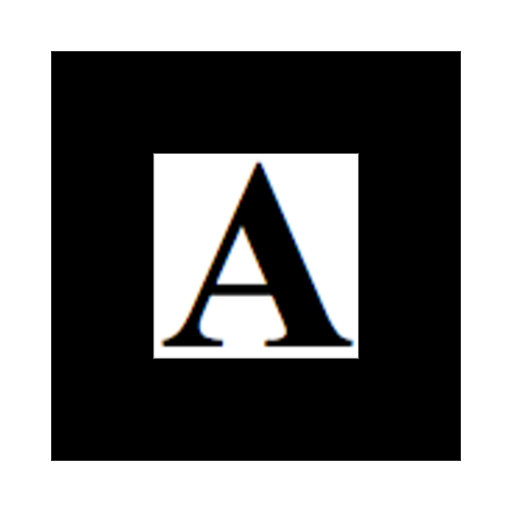

متحف الواقع المعزز للثقافة السعودية
تجربة رقمية تفاعلية تستعرض عناصر من التراث السعودي باستخدام تقنية الواقع المعزز والقطع ثلاثية الأبعاد.
طريقة الاستخدام
- افتح الكاميرا عبر زر البداية.
- وجّه الكاميرا إلى الماركر المناسب.
- سيظهر المجسم بشكل ثلاثي الأبعاد.


